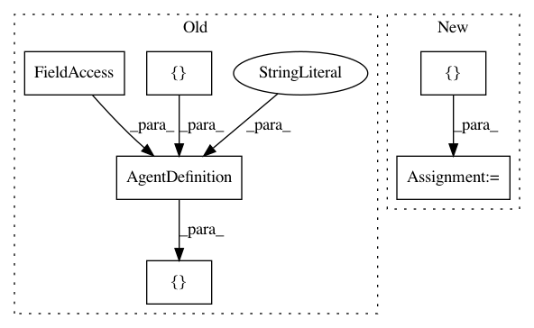

a44642f8dd5ecf7a794efa1d5df951b3dafdf604,example.py,,editor_multi_agent_example,#,152
Before Change
This editor example shows how to interact with holodeck worlds that have multiple agents.
This is specifically for when working with UE4 directly and not a prebuilt binary.
agent_definitions = [
AgentDefinition("uav0", agents.UavAgent, [sensors.RGBCamera, sensors.LocationSensor]),
AgentDefinition("uav1", agents.UavAgent, [sensors.LocationSensor, sensors.VelocitySensor])
]
env = HolodeckEnvironment(agent_definitions, start_world=False)
cmd0 = np.array([0, 0, -2, 10])
cmd1 = np.array([0, 0, 5, 10])
After Change
Note: When launching Holodeck from the editor, press the down arrow next to "Play" and select
"Standalone Game", otherwise the editor will lock up when the client stops ticking it.
config = {
"name": "test_handagent",
"world": "TestWorld",
"main_agent": "hand0",
"agents": [
{
"agent_name": "uav0",
"agent_type": "UavAgent",
"sensors": [
],
"control_scheme": 1,
"location": [0, 0, 1]
},
{
"agent_name": "uav1",
"agent_type": "UavAgent",
"sensors": [
],
"control_scheme": 1,
"location": [0, 0, 5]
}
]
}
env = HolodeckEnvironment(scenario=config, start_world=False)
cmd0 = np.array([0, 0, -2, 10])
In pattern: SUPERPATTERN
Frequency: 3
Non-data size: 6
Instances
Project Name: BYU-PCCL/holodeck
Commit Name: a44642f8dd5ecf7a794efa1d5df951b3dafdf604
Time: 2020-01-23
Author: jaydenmilne@users.noreply.github.com
File Name: example.py
Class Name:
Method Name: editor_multi_agent_example
Project Name: BYU-PCCL/holodeck
Commit Name: c654fb044a9084fcd85606f18127c82dfd46182f
Time: 2019-02-11
Author: maxdrob1@gmail.com
File Name: example.py
Class Name:
Method Name: editor_example
Project Name: BYU-PCCL/holodeck
Commit Name: a44642f8dd5ecf7a794efa1d5df951b3dafdf604
Time: 2020-01-23
Author: jaydenmilne@users.noreply.github.com
File Name: example.py
Class Name:
Method Name: editor_example